Java NIO 全称 java non-blocking IO，是指 JDK 提供的新 API。从 JDK1.4 开始，Java 提供了一系列改进的输入/输出的新特性，被统称为 NIO(即 New IO)，是同步非阻塞的。
NIO基础
NIO介绍
Java NIO 全称 java non-blocking IO，是指 JDK 提供的新 API。从 JDK1.4 开始，Java 提供了一系列改进的输入/输出的新特性，被统称为 NIO(即 New IO)，是同步非阻塞的。
NIO 相关类都被放在 java.nio 包及子包下，并且对原 java.io 包中的很多类进行改写。
NIO 有三大核心部分：Channel(通道)，Buffer(缓冲区), Selector(选择器) ，他们之间的关系如下：
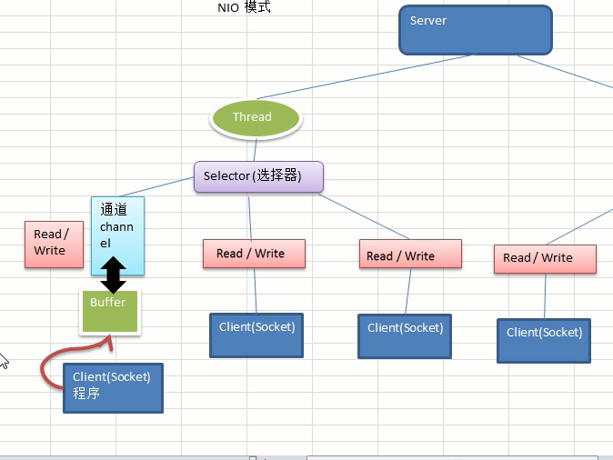
可以看到client是和buffer相连的（这也是一个缓冲的思想，可以更加高效的进行io），buffer通过通道绑定到选择器上。每个选择器由server上的线程控制。
所以我们可以说NIO是面向缓冲区或者面向块编程的。数据读取到一个它稍后处理的缓冲区，需要时可在缓冲区中前后移动，这就增加了处理过程中的灵活性，使用它可以提供非阻塞式的高伸缩性网络。
Java NIO的非阻塞模式，使一个线程从某通道发送请求或者读取数据，但是它仅能得到目前可用的数据，如果目前没有数据可用时，就什么都不会获取，而不是保持线程阻塞，所以直至数据变的可以读取之前，该线程可以继续做其他的事情。 非阻塞写也是如此，一个线程请求写入一些数据到某通道，但不需要等待它完全写入，这个线程同时可以去做别的事情。
这一点是NIO的精髓：看上图，对于server的线程来说，如果某个buffer里面没有想要的数据，此时，serverThread并不会阻塞掉，而是通过selector选择其他的channel进行其他的业务
HTTP2.0使用了多路复用的技术，做到同一个连接并发处理多个请求，而且并发请求的数量比HTTP1.1大了好几个数量级。
NIO 和 BIO 的比较
BIO 以流的方式处理数据,而 NIO 以块的方式处理数据块， I/O 的效率比流 I/O 高很多
BIO 是阻塞的，NIO 则是非阻塞的
BIO基于字节流和字符流进行操作，而 NIO 基于 Channel(通道)和 Buffer(缓冲区)进行操作，数据总是从通道读取到缓冲区中，或者从缓冲区写入到通道中。Selector(选择器)用于监听多个通道的事件（比如：连接请求，数据到达等），因此使用单个线程就可以监听多个客户端通道
核心组件的关系
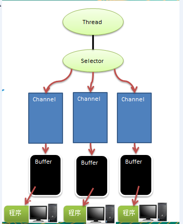
- 1个serverThread，对应1个selector，可绑定多个channel；每个Channel对应一个buffer，buffer是和程序绑定的
- 程序切换到哪个channel 是由事件决定的, Event 就是一个重要的概念；Selector 会根据不同的事件，在各个通道上切换
- Buffer 就是一个内存块 ， 底层是有一个数组。
- Buffer是双向的，通过flip切换即可；但BIO是单向的，要么是输入流要么是输出流。
- channel 是双向的，可以返回底层操作系统的情况（比如Linux底层的操作系统通道就是双向的）
缓冲区（Buffer)
基本介绍
缓冲区本质上是一个可以读写数据的内存块，可以理解成是一个**容器对象(含数组)**，该对象提供了一组方法，可以更轻松地使用内存块，缓冲区对象内置了一些机制，能够跟踪和记录缓冲区的状态变化情况。Channel 提供从文件、网络读取数据的渠道，但是读取或写入的数据都必须经由 Buffer
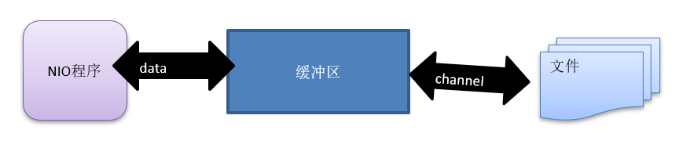
先简单看个入门示例：
package uestc.zhangkx.nio;
import java.nio.IntBuffer;
/**
* @author zhangkx
* @version 1.0
* @date 2020/9/26 9:27
*/
public class BasicBuffer {
public static void main(String[] args) {
//说明buffer的使用
//创建一个buffer,大小为5，之后还会详细讲
IntBuffer intBuffer = IntBuffer.allocate(5);
//向Buffer中存放数据
/*intBuffer.put(10);
intBuffer.put(11);
intBuffer.put(12);
intBuffer.put(13);
intBuffer.put(14);*/
for (int i = 0; i < intBuffer.capacity(); i++) {
intBuffer.put(i*2);
}
//从buffer中读取数据
//将buffer转换，读写切换
intBuffer.flip();
while(intBuffer.hasRemaining()){
System.out.println(intBuffer.get());
}
}
}
这代码很简单，只涉及到buffer（allocate开辟空间、put放入、flip翻转、get取出）
buffer抽象类
子类结构
在 NIO 中，Buffer 是一个顶层父类，它是一个抽象类, 类的层级关系图:
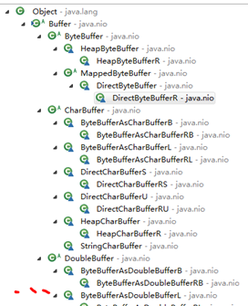
我们一般会针对我们具体使用的数据类型而选择不同的Buffer子类
常用buffer子类一览
1)ByteBuffer，存储字节数据到缓冲区
2)ShortBuffer，存储字符串数据到缓冲区
3)CharBuffer，存储字符数据到缓冲区
4)IntBuffer，存储整数数据到缓冲区
5)LongBuffer，存储长整型数据到缓冲区
6)DoubleBuffer，存储小数到缓冲区
7)FloatBuffer，存储小数到缓冲区
属性
Buffer类定义了所有的缓冲区都具有的四个属性来提供关于其所包含的数据元素的信息
private int mark = -1;
private int position = 0;
private int limit;
private int capacity;
| 属性 | 描述 |
|---|---|
| Capacity | 容量，即可以容纳的最大数据量；在缓冲区创建时被设定并且不能改变 |
| Limit | 表示缓冲区的当前终点，不能对缓冲区超过极限的位置进行读写操作。且极限是可以修改的 |
| Position | 位置，下一个要被读或写的元素的索引，每次读写缓冲区数据时都会改变改值，为下次读写作准备 |
| Mark | 标记 |
这里可以看出buffer的使用依赖于四个属性，1.capacity是最大容量，通过allocate申请得到 2.limit是当前终点，通过put得以提升 3.position是当前位置，通过get实现改变
方法
buffer中相关方法
public abstract class Buffer {
//JDK1.4时，引入的api
public final int capacity( )//返回此缓冲区的容量
public final int position( )//返回此缓冲区的位置
public final Buffer position (int newPositio)//设置此缓冲区的位置
public final int limit( )//返回此缓冲区的限制
public final Buffer limit (int newLimit)//设置此缓冲区的限制
public final Buffer mark( )//在此缓冲区的位置设置标记
public final Buffer reset( )//将此缓冲区的位置重置为以前标记的位置
public final Buffer clear( )//清除此缓冲区, 即将各个标记恢复到初始状态，但是数据并没有真正擦除, 后面操作会覆盖
public final Buffer flip( )//反转此缓冲区
public final Buffer rewind( )//重绕此缓冲区
public final int remaining( )//返回当前位置与限制之间的元素数
public final boolean hasRemaining( )//告知在当前位置和限制之间是否有元素
public abstract boolean isReadOnly( );//告知此缓冲区是否为只读缓冲区
//JDK1.6时引入的api
public abstract boolean hasArray();//告知此缓冲区是否具有可访问的底层实现数组
public abstract Object array();//返回此缓冲区的底层实现数组
public abstract int arrayOffset();//返回此缓冲区的底层实现数组中第一个缓冲区元素的偏移量
public abstract boolean isDirect();//告知此缓冲区是否为直接缓冲区
}
ByteBuffer
从前面可以看出对于 Java 中的基本数据类型(boolean除外)，都有一个 Buffer 类型与之相对应，最常用的自然是ByteBuffer 类（二进制数据）
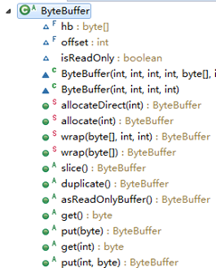
public abstract class ByteBuffer {
//缓冲区创建相关api
public static ByteBuffer allocateDirect(int capacity)//创建直接缓冲区
public static ByteBuffer allocate(int capacity)//设置缓冲区的初始容量
public static ByteBuffer wrap(byte[] array)//把一个数组放到缓冲区中使用
//构造初始化位置offset和上界length的缓冲区
public static ByteBuffer wrap(byte[] array,int offset, int length)
//缓存区存取相关API
public abstract byte get( );//从当前位置position上get，get之后，position会自动+1
public abstract byte get (int index);//从绝对位置get
public abstract ByteBuffer put (byte b);//从当前位置上添加，put之后，position会自动+1
public abstract ByteBuffer put (int index, byte b);//从绝对位置上put
}
通道（Channel）
基本介绍
NIO的通道类似于流，但有些区别如下：
- 通道可以同时进行读写，而流只能读或者只能写
- 通道可以实现异步读写数据
- 通道可以从缓冲读数据，也可以写数据到缓冲
BIO 中的 stream 是单向的，例如 FileInputStream 对象只能进行读取数据的操作，而 NIO 中的通道(Channel)是双向的，可以读操作，也可以写操作。
Channel在NIO中是一个接口:
public interface Channel extends Closeable{}常用的 Channel 类有：FileChannel、DatagramChannel、ServerSocketChannel 和 SocketChannel。
FileChannel 用于文件的数据读写
DatagramChannel 用于 UDP 的数据读写
ServerSocketChannel 和 SocketChannel 用于 TCP 的数据读写
接口下的实现类
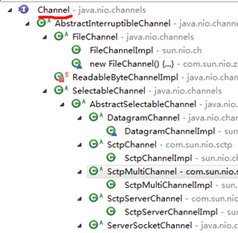
对通道的理解：通道是不具有容量的，它需要和其他的流进行绑定（通道本身就存在于原生io的steam中）。所以通道的‘存在感’很低，以至于他的方法read和write，都是站在buffer的角度来看的
FileChannel类
常用方法
public abstract class FileChannel {
public int read(ByteBuffer dst); //从通道读取数据并放到缓冲区中
public int write(ByteBuffer src); //把缓冲区的数据写到通道中
public long transferFrom(ReadableByteChannel src, long position, long count); //从目标通道中复制数据到当前通道
public long transferTo(long position, long count, WritableByteChannel target); //把数据从当前通道复制给目标通道
}
这里最关键的是read和write的方向，虽然是channel，但是是站在buffer的角度来看的。read是出，write是入
ServerSocketChannel
ServerSocketChannel 在服务器端监听新的客户端 Socket 连接
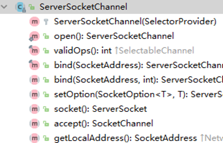
public abstract class ServerSocketChannel extends AbstractSelectableChannel implements NetworkChannel{
public static ServerSocketChannel open()//得到一个 ServerSocketChannel 通道
public final ServerSocketChannel bind(SocketAddress local)//设置服务器端端口号
public final SelectableChannel configureBlocking(boolean block)//设置阻塞或非阻塞模式，取值 false 表示采用非阻塞模式
public SocketChannel accept()//接受一个连接，返回代表这个连接的通道对象
public final SelectionKey register(Selector sel, int ops)//注册一个选择器并设置监听事件
}
SocketChannel
SocketChannel，网络 IO 通道，具体负责进行读写操作。NIO 把缓冲区的数据写入通道，或者把通道里的数据读到缓冲区。
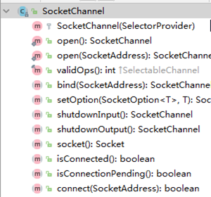
public abstract class SocketChannel extends AbstractSelectableChannel implements ByteChannel, ScatteringByteChannel, GatheringByteChannel, NetworkChannel{
public static SocketChannel open();//得到一个 SocketChannel 通道
public final SelectableChannel configureBlocking(boolean block);//设置阻塞或非阻塞模式，取值 false 表示采用非阻塞模式
public boolean connect(SocketAddress remote);//连接服务器
public boolean finishConnect();//如果上面的方法连接失败，接下来就要通过该方法完成连接操作
public int write(ByteBuffer src);//往通道里写数据
public int read(ByteBuffer dst);//从通道里读数据
public final SelectionKey register(Selector sel, int ops, Object att);//注册一个选择器并设置监听事件，最后一个参数可以设置共享数据
public final void close();//关闭通道
}
案例
写入到本地文件
package uestc.zhangkx.nio;
import java.io.FileNotFoundException;
import java.io.FileOutputStream;
import java.nio.ByteBuffer;
import java.nio.channels.FileChannel;
/**
* 原生io里就有通道
* 此时的通道是和内存io绑定了（内存io中维护一个内部channel类） fileOutputStream.getChannel()
* NIO的写入磁盘的操作， 先将内容从内存放入到缓冲区 byteBuffer.put()
* 理解一下什么是通道-->此时的通道是和fileOutputStream绑定的，那么写入到通道内，会自动通到OutputStream，也就是写入到磁盘了
*
* @author zhangkx
* @version 1.0
* @date 2020/9/27 10:47
*/
public class NIOFileChannel01 {
public static void main(String[] args) throws Exception {
String str = "hello,zhangkx";
//创建一个输入流->channel
FileOutputStream fileOutputStream = new FileOutputStream("f:\\file01.txt");
//通过fileOutputSteam获取对应的FileChannel
//实际FileChannel是虚拟类，真实使用的是FileChannelImpl
FileChannel fileChannel = fileOutputStream.getChannel();
//创建缓冲区
ByteBuffer byteBuffer = ByteBuffer.allocate(1024);
//将str 放入到 byteBuffer
byteBuffer.put(str.getBytes());
//byteBuffer翻转
byteBuffer.flip();
//从byteBuffer到fileChannel
fileChannel.write(byteBuffer);
fileOutputStream.close();
}
}
从本地文件读取
package uestc.zhangkx.nio;
import java.io.File;
import java.io.FileInputStream;
import java.nio.ByteBuffer;
import java.nio.channels.FileChannel;
/**
* 这里的读取只是和写入在逻辑上翻转了一下
* 想要读取就是从磁盘上建立出FileInputStream，和通道绑定
* 这个通道内就自动是磁盘文件的内容，只需要将内容从通道通向缓冲区
* 缓冲区直接连接到sout
*
* @author zhangkx
* @version 1.0
* @date 2020/9/27 11:05
*/
public class NIOFileChannel02 {
public static void main(String[] args) throws Exception {
//使用new file的理由 --> file.length()方法可以让Buffer.allocate()更加有精确
File file = new File("f:\\file01.txt");
FileInputStream fileInputStream = new FileInputStream(file);
System.out.println(fileInputStream);
//Channel是存在于Stream中的
FileChannel channel = fileInputStream.getChannel();
ByteBuffer byteBuffer = ByteBuffer.allocate((int) file.length());
//read是出channel，入buffer
channel.read(byteBuffer);
//从buffer中输出到sout
System.out.println(new String(byteBuffer.array()));
fileInputStream.close();
}
}
使用1个buffer完成文件读写
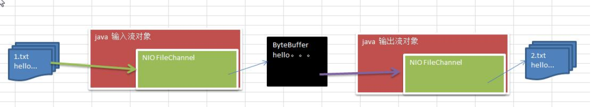
package uestc.zhangkx.nio;
import java.io.File;
import java.io.FileInputStream;
import java.io.FileOutputStream;
import java.nio.Buffer;
import java.nio.ByteBuffer;
import java.nio.channels.FileChannel;
/**
* 只用一个缓冲区实现粘贴复制
*
* @author zhangkx
* @version 1.0
* @date 2020/9/27 14:05
*/
public class NIOFileChannel03 {
public static void main(String[] args) throws Exception {
FileInputStream fileInputStream = new FileInputStream("f:\\1.txt");
FileChannel inputStreamChannel = fileInputStream.getChannel();
FileOutputStream fileOutputStream = new FileOutputStream("f:\\2.txt");
FileChannel outputStreamChannel = fileOutputStream.getChannel();
ByteBuffer byteBuffer = ByteBuffer.allocate(1024);
while(true){
byteBuffer.clear();
//入buffer
int read = inputStreamChannel.read(byteBuffer);
if(read == -1){
break;
}
byteBuffer.flip();
//出buffer
outputStreamChannel.write(byteBuffer);
}
fileInputStream.close();
fileOutputStream.close();
}
}
使用transferFrom拷贝
使用channel的transferFrom会很方便的实现拷贝
package uestc.zhangkx.nio;
import java.io.FileInputStream;
import java.io.FileOutputStream;
import java.nio.channels.FileChannel;
/**
* 使用transferFrom拷贝
*
* @author zhangkx
* @version 1.0
* @date 2020/9/27 14:53
*/
public class NIOFileChannel04 {
public static void main(String[] args) throws Exception {
FileInputStream fileInputStream = new FileInputStream("F:\\a.jpg");
FileOutputStream fileOutputStream = new FileOutputStream("F:\\b.jpg");
FileChannel inChannel = fileInputStream.getChannel();
FileChannel outChannel = fileOutputStream.getChannel();
outChannel.transferFrom(inChannel,0, inChannel.size());
fileOutputStream.close();
fileInputStream.close();
}
}
关于buffer和channel
BufferUnderflowException
ByteBuffer 支持类型化的put 和 get, put 放入的是什么数据类型，get就应该使用相应的数据类型来取出，否则可能有 BufferUnderflowException 异常。
package uestc.zhangkx.nio;
import java.nio.ByteBuffer;
/**
* @author zhangkx
* @version 1.0
* @date 2020/9/27 15:00
*/
public class NIOByteBufferPutGet {
public static void main(String[] args) {
ByteBuffer buffer = ByteBuffer.allocate(64);
buffer.putInt(100);
buffer.putLong(23);
buffer.putChar('张');
buffer.putShort((short) 4);
//取出
buffer.flip();
System.out.println();
System.out.println(buffer.getInt());
System.out.println(buffer.getLong());
System.out.println(buffer.getChar());
System.out.println(buffer.getShort());
}
}
ReadOnlyBuffer
可以将一个普通Buffer 转成只读Buffer
package uestc.zhangkx.nio;
import java.nio.ByteBuffer;
/**
* @author zhangkx
* @version 1.0
* @date 2020/9/27 15:18
*/
public class ReadOnlyBuffer {
public static void main(String[] args) {
ByteBuffer byteBuffer = ByteBuffer.allocate(64);
for (int i = 0; i < 64; i++) {
byteBuffer.put((byte) i);
}
byteBuffer.flip();
ByteBuffer readOnlyBuffer = byteBuffer.asReadOnlyBuffer();
System.out.println(readOnlyBuffer.getClass());
while(readOnlyBuffer.hasRemaining()){
System.out.println(readOnlyBuffer.get());
}
}
}
MappedByteBuffer
NIO 还提供了 MappedByteBuffer， 可以让文件直接在内存（堆外的内存）中进行修改， 而如何同步到文件由NIO 来完成.
package uestc.zhangkx.nio;
import java.io.RandomAccessFile;
import java.nio.MappedByteBuffer;
import java.nio.channels.FileChannel;
import java.util.RandomAccess;
/**
* MappedByteBuffer
* 直接在内存修改（堆外内存） os不需要再拷贝一次
* @author zhangkx
* @version 1.0
* @date 2020/9/27 15:22
*/
public class MappedByteBufferTest {
public static void main(String[] args) throws Exception {
RandomAccessFile randomAccessFile = new RandomAccessFile("f:\\1.txt", "rw");
//获取对应的文件通道
FileChannel channel = randomAccessFile.getChannel();
/**
* map方法
* 建立文件-内存的映射
* @params: mode--使用读写模式
* position--可以直接修改的起始位置
* size--映射到内存的大小 即将文件的多少个字节映射到内存
*/
MappedByteBuffer mappedByteBuffer = channel.map(FileChannel.MapMode.READ_WRITE, 0, 5);
mappedByteBuffer.put(0, (byte) 'H');
mappedByteBuffer.put(3, (byte) '9');
randomAccessFile.close();
System.out.println("success");
}
}
ScatteringAndGathering
前面我们讲的读写操作，都是通过一个Buffer 完成的，NIO 还支持 通过多个Buffer (即 Buffer 数组) 完成读写操作，即 Scattering 和 Gathering
package uestc.zhangkx.nio;
import java.io.IOException;
import java.net.InetSocketAddress;
import java.nio.ByteBuffer;
import java.nio.channels.ServerSocketChannel;
import java.nio.channels.SocketChannel;
import java.util.ArrayList;
import java.util.Arrays;
/**
* Scattering: 将数据写入到buffer时，可以采用buffer数组，依次写入【分散】
* Gathering： 从buffer读取数据时，可以采用buffer数组，依次读取 【聚合】
*
* @author zhangkx
* @version 1.0
* @date 2020/10/10 20:24
*/
public class ScatteringAndGatheringTest {
public static void main(String[] args) throws IOException {
//使用ServerSocketChannel和SocketChannel(网络编程)
ServerSocketChannel serverSocketChannel = ServerSocketChannel.open();
InetSocketAddress inetSocketAddress = new InetSocketAddress(7000);
//绑定端口到socket 并启动
serverSocketChannel.socket().bind(inetSocketAddress);
//创建buffer数组
ByteBuffer[] byteBuffers = new ByteBuffer[2];
byteBuffers[0] = ByteBuffer.allocate(5);
byteBuffers[1] = ByteBuffer.allocate(3);
//等客户端连接（telnet）
SocketChannel socketChannel = serverSocketChannel.accept();
int messageLength = 8;
while (true) {
int byteRead = 0;
while (byteRead < messageLength ) {
long read = socketChannel.read(byteBuffers);
byteRead += read;//累计所读的字节数
System.out.println("byteRead=" + byteRead);
//流打印 查看buffers的position和limit
Arrays.asList(byteBuffers).stream().map(buffer -> "postion=" + buffer.position() + ",limit=" + buffer.limit()).forEach(System.out::println);
}
//将所有buffer都翻转
Arrays.asList(byteBuffers).stream().forEach(byteBuffer -> byteBuffer.flip());
//将数据读出显示到客户端
long byteWirte = 0;
while (byteWirte < messageLength) {
long l = socketChannel.write(byteBuffers);
byteWirte += l;
}
//将所有的buffer 进行clear
Arrays.asList(byteBuffers).forEach(buffer-> {buffer.clear();});
System.out.println("byteRead:=" + byteRead + " byteWrite=" + byteWirte + ", messagelength" + messageLength);
}
}
}
选择器（selector）
基本介绍
Java 的 NIO，用非阻塞的 IO 方式。可以用一个线程，处理多个的客户端连接，就会使用到Selector(选择器**)**
Selector 能够检测多个注册的通道上是否有事件发生(注意:多个Channel以事件的方式可以注册到同一个Selector)，如果有事件发生，便获取事件然后针对每个事件进行相应的处理。这样就可以只用一个单线程去管理多个通道，也就是管理多个连接和请求。
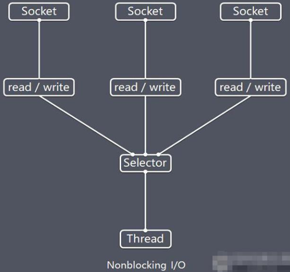
只有在 连接/通道 真正有读写事件发生时，才会进行读写，就大大地减少了系统开销，并且不必为每个连接都创建一个线程，不用去维护多个线程
避免了多线程之间的上下文切换导致的开销
特点
Netty 的 IO 线程 NioEventLoop 聚合了 Selector(选择器，也叫多路复用器)，可以同时并发处理成百上千个客户端连接。
当线程从某客户端 Socket 通道进行读写数据时，若没有数据可用时，selector线程可以进行其他任务。
线程通常将非阻塞 IO 的空闲时间用于在其他通道上执行 IO 操作，所以单独的线程可以管理多个输入和输出通道。
由于读写操作都是非阻塞的，这就可以充分提升 IO 线程的运行效率，避免由于频繁 I/O 阻塞导致的线程挂起。
一个 I/O 线程可以并发处理 N 个客户端连接和读写操作，这从根本上解决了传统同步阻塞 I/O 一连接一线程模型，架构的性能、弹性伸缩能力和可靠性都得到了极大的提升。
selector抽象类
先看看selector类的结构
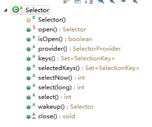
常用方法
public abstract class Selector implements Closeable {
public static Selector open();//得到一个选择器对象
public int select(long timeout);//监控所有注册的通道，当其中有 IO 操作可以进行时，将对应的 SelectionKey 加入到内部集合中并返回，参数用来设置超时时间
public Set<SelectionKey> selectedKeys();//从内部集合中得到所有的 SelectionKey
}
selector.select()//阻塞
selector.select(1000);//阻塞1000毫秒，在1000毫秒后返回
selector.wakeup();//唤醒selector
selector.selectNow();//不阻塞，立马返还
关系梳理
NIO 非阻塞 网络编程相关的(Selector、SelectionKey、ServerScoketChannel和SocketChannel) 关系梳理图
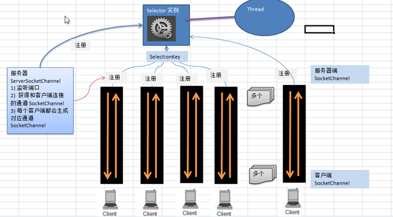
当客户端连接时，会通过ServerSocketChannel 得到 SocketChannel
Selector 进行监听 select 方法, 返回有事件发生的通道的个数.
将socketChannel注册到Selector上, register(Selector sel, int selector）上可以注册多个SocketChannel
注册后返回一个 SelectionKey, 会和该Selector 关联(集合)
进一步得到各个 SelectionKey (有事件发生)
在通过 SelectionKey 反向获取 SocketChannel , 方法 channel()
可以通过 得到的 channel , 完成业务处理
socketChannel（由serverSocketChannel.accept得到）要注册到selector，serverSocketChannel也要注册到selector，只不过设置的OP不一样。
一旦通道有事件发生后，selector.select()会返回有事件的通道数量，那么这些有事件的通道如何得到呢？
selector.selectorKeys()事件发生的key；selector.keys()是所有注册的key—>然后如下得到channel和buffer
SocketChannel channel = (SocketChannel)key.channel();
ByteBuffer buffer = (ByteBuffer)key.attachment();
注意，这个selectorKeys集合是一次性产物，记得用完后手动remove（iterator.remove）
SelectionKey
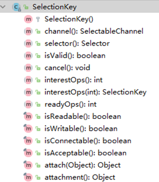
注册关系
SelectionKey，表示 Selector 和网络通道的注册关系, 共四种:
int OP_ACCEPT：有新的网络连接可以 accept，值为 16int OP_CONNECT：代表连接已经建立，值为 8int OP_READ：代表读操作，值为 1int OP_WRITE：代表写操作，值为 4
源码中：
public static final intOP_READ = 1 << 0;
public static final intOP_WRITE = 1 << 2;
public static final int OP_CONNECT = 1 << 3;
public static final int OP_ACCEPT = 1 << 4;
相关方法
public abstract class SelectionKey {
public abstract Selector selector();//得到与之关联的 Selector 对象
public abstract SelectableChannel channel();//得到与之关联的通道
public final Object attachment();//得到与之关联的共享数据
public abstract SelectionKey interestOps(int ops);//设置或改变监听事件
public final boolean isAcceptable();//是否可以 accept
public final boolean isReadable();//是否可以读
public final boolean isWritable();//是否可以写
}
NIO案例
编写一个 NIO 入门案例，实现服务器端和客户端之间的数据简单通讯（非阻塞）
服务器
package uestc.zhangkx.nio;
import java.net.InetSocketAddress;
import java.nio.ByteBuffer;
import java.nio.channels.SelectionKey;
import java.nio.channels.Selector;
import java.nio.channels.ServerSocketChannel;
import java.nio.channels.SocketChannel;
import java.util.Iterator;
import java.util.Set;
/**
* NIOServer
* 用Nio写的server服务器,目的在于熟悉三大组件
*
* @author zhangkx
* @version 1.0
* @date 2020/10/12 13:49
*/
public class NIOServer{
public static void main(String[] args) throws Exception {
//创建ServerSocketChannel -> ServerSocket
ServerSocketChannel serverSocketChannel = ServerSocketChannel.open();
//得到一个Selecor对象
Selector selector = Selector.open();
//绑定一个端口6666, 在服务器端监听
serverSocketChannel.socket().bind(new InetSocketAddress(6666));
//设置为非阻塞
serverSocketChannel.configureBlocking(false);
//把 serverSocketChannel 注册到 selector 关心事件为 OP_ACCEPT
serverSocketChannel.register(selector, SelectionKey.OP_ACCEPT);
System.out.println("注册后的selectionkey 数量=" + selector.keys().size()); // 1
//循环等待客户端连接
while (true){
//这里我们等待1秒，如果没有事件发生, 返回
if(selector.select(1000) == 0) { //没有事件发生
System.out.println("服务器等待了1秒，无连接");
continue;
}
//如果返回的>0, 就获取到相关的 selectionKey集合
//1.如果返回的>0， 表示已经获取到关注的事件
//2. selector.selectedKeys() 返回关注事件的集合
// 通过 selectionKeys 反向获取通道
Set<SelectionKey> selectionKeys = selector.selectedKeys();
System.out.println("selectionKeys 数量 = " + selectionKeys.size());
//遍历 Set<SelectionKey>, 使用迭代器遍历
Iterator<SelectionKey> keyIterator = selectionKeys.iterator();
while (keyIterator.hasNext()) {
//获取到SelectionKey
SelectionKey key = keyIterator.next();
//根据key 对应的通道发生的事件做相应处理
if(key.isAcceptable()) { //如果是 OP_ACCEPT, 有新的客户端连接
//该该客户端生成一个 SocketChannel
SocketChannel socketChannel = serverSocketChannel.accept();
System.out.println("客户端连接成功 生成了一个 socketChannel " + socketChannel.hashCode());
//将 SocketChannel 设置为非阻塞
socketChannel.configureBlocking(false);
//将socketChannel 注册到selector, 关注事件为 OP_READ， 同时给socketChannel
//关联一个Buffer
socketChannel.register(selector, SelectionKey.OP_READ, ByteBuffer.allocate(1024));
System.out.println("客户端连接后 ，注册的selectionkey 数量=" + selector.keys().size()); //2,3,4..
}
if(key.isReadable()) { //发生 OP_READ
//通过key 反向获取到对应channel
SocketChannel channel = (SocketChannel)key.channel();
//获取到该channel关联的buffer
ByteBuffer buffer = (ByteBuffer)key.attachment();
channel.read(buffer);
System.out.println("form 客户端 " + new String(buffer.array()));
}
//手动从集合中移动当前的selectionKey, 防止重复操作
keyIterator.remove();
}
}
}
}
客户端
package uestc.zhangkx.nio;
import java.net.InetSocketAddress;
import java.nio.ByteBuffer;
import java.nio.channels.SocketChannel;
/**
* NIOClient
* 用Nio写，给server提供客户
* @author zhangkx
* @version 1.0
* @date 2020/10/12 14:44
*/
public class NIOClient {
public static void main(String[] args) throws Exception{
//得到一个网络通道
SocketChannel socketChannel = SocketChannel.open();
//设置非阻塞
socketChannel.configureBlocking(false);
//提供服务器端的ip 和 端口
InetSocketAddress inetSocketAddress = new InetSocketAddress("127.0.0.1", 6666);
//连接服务器
if (!socketChannel.connect(inetSocketAddress)) {
while (!socketChannel.finishConnect()) {
System.out.println("因为连接需要时间，客户端不会阻塞，可以做其它工作..");
}
}
//...如果连接成功，就发送数据
String str = "hello, zhangkx!";
//Wraps a byte array into a buffer
ByteBuffer buffer = ByteBuffer.wrap(str.getBytes());
//发送数据，将 buffer 数据写入 channel
socketChannel.write(buffer);
System.in.read();
}
}